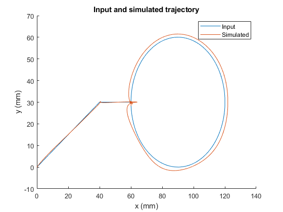
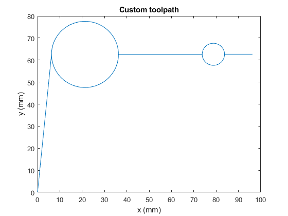

Contents
1
T = 0.0001;
Ka = 1;
Kt = 0.49;
Ke = 1.59;
Jx = 0.000436;
Bx = 0.0094;
Jy = 0.0003;
By = 0.0091;
a = 13.9282;
T_ = 0.0021323;
Kx = 0.75858;
Ky = 0.82224;
Ki = 12.5664;
LL = tf([a*T_ 1],[T_ 1]);
I = tf([1 Ki],[1 0]);
LLI_Lx_z = Kx*c2d(LL*I, T, 'tustin');
LLI_Ly_z = Ky*c2d(LL*I, T, 'tustin');
data = load('sampleTraj.mat');
Tplot = data.txy.t;
xplot = data.txy.x;
yplot = data.txy.y;
toPlot = load('simTraj.mat');
clf;
hold on;
title('Input and simulated trajectory');
plot(toPlot.output.Data(:,2), toPlot.output.Data(:,4));
plot(toPlot.output.Data(:,3), toPlot.output.Data(:,5));
xlabel('x (mm)');
ylabel('y (mm)');
legend('Input', 'Simulated');
saveas(gcf, 'qC1.png');

2
data = linearFromZero(5, 50);
ti = data(end, 1);
xi = data(end, 5);
yi = data(end, 6);
data = [data; circleCut(xi, yi, ti, 15)];
ti = data(end, 1);
xi = data(end, 5);
yi = data(end, 6);
data = [data; circleCut(xi, yi, ti, 5)];
traj.t = data(:,1);
traj.x = data(:,5);
traj.y = data(:,6);
save myTraj traj;
clf;
plot(data(:,5), data(:,6));
title('Custom toolpath');
xlabel('x (mm)');
ylabel('y (mm)');
saveas(gcf, 'qC2.png');
function data1 = linearFromZero(xf, yf)
A = 250;
T = 0.1;
T = T * 0.001;
xf = xf/2;
yf = yf/2;
L = ceil(sqrt(xf^2 + yf^2));
[T1, T2, T3] = calc(L);
T_total = T1+T2+T3;
x_ratio = xf/L;
y_ratio = yf/L;
t = 0;
s = 0;
sdot = 0;
sdotdot = A;
xr = 0;
yr = 0;
vxr = 0;
vyr = 0;
axr = A*x_ratio;
ayr = A*y_ratio;
count = 1;
data1 = zeros(T_total/T, 10);
while t <= T_total
data1(count, 1) = t;
data1(count, 2) = s;
data1(count, 3) = sdot;
data1(count, 4) = sdotdot;
data1(count, 5) = xr;
data1(count, 6) = yr;
data1(count, 7) = vxr;
data1(count, 8) = vyr;
data1(count, 9) = axr;
data1(count, 10) = ayr;
if t < T1
sdotdot = A;
elseif t >= T1 && t < T1+T2
sdotdot = 0;
else
sdotdot = -A;
end
sdot = sdot + T*sdotdot;
s = s + sdot*T;
xr = s*x_ratio;
yr = s*y_ratio;
vxr = sdot*x_ratio;
vyr = sdot*y_ratio;
axr = sdotdot*x_ratio;
ayr = sdotdot*y_ratio;
t = t + T;
count = count + 1;
end
end
function data = circleCut(xi, yi, ti, r)
A = 250;
T = 0.1;
T = T * 0.001;
L = 2*3.1415*r;
[T1, T2, T3] = calc(L);
T_total = T1+T2+T3;
x_ratio = 1;
y_ratio = 0;
t = 0;
s = 0;
sdot = 0;
sdotdot = A;
xr = 0;
yr = 0;
vxr = 0;
vyr = 0;
axr = A*x_ratio;
ayr = A*y_ratio;
count = 1;
data1 = zeros(T_total/T, 10);
while t <= T_total
if t < T1
sdotdot = A;
elseif t >= T1 && t < T1+T2
sdotdot = 0;
else
sdotdot = -A;
end
sdot = sdot + T*sdotdot;
s = s + sdot*T;
[x_ratio, y_ratio] = getRatios(s/L);
vxr_prev = vxr;
vyr_prev = vyr;
vxr = sdot*x_ratio;
vyr = sdot*y_ratio;
xr = xr + vxr*T;
yr = yr + vyr*T;
axr = (vxr - vxr_prev)/T;
ayr = (vyr - vyr_prev)/T;
data1(count, 1) = t+ti;
data1(count, 2) = s;
data1(count, 3) = sdot;
data1(count, 4) = sdotdot;
data1(count, 5) = xr+xi;
data1(count, 6) = yr+yi;
data1(count, 7) = vxr;
data1(count, 8) = vyr;
data1(count, 9) = axr;
data1(count, 10) = ayr;
t = t + T;
count = count + 1;
end
[T1, T2, T3] = calc(r);
T_total = T1+T2+T3;
x_ratio = 1;
y_ratio = 0;
t = 0;
s = 0;
sdot = 0;
sdotdot = A;
xr = 0;
yr = 0;
vxr = 0;
vyr = 0;
axr = A*x_ratio;
ayr = A*y_ratio;
count = 1;
data2 = zeros(T_total/T, 10);
while t <= T_total
data2(count, 1) = t+data1(end, 1);
data2(count, 2) = s+data1(end, 2);
data2(count, 3) = sdot+data1(end, 3);
data2(count, 4) = sdotdot;
data2(count, 5) = xr+data1(end, 5);
data2(count, 6) = yr+data1(end, 6);
data2(count, 7) = vxr+data1(end, 7);
data2(count, 8) = vyr+data1(end, 8);
data2(count, 9) = axr;
data2(count, 10) = ayr;
if t < T1
sdotdot = A;
elseif t >= T1 && t < T1+T2
sdotdot = 0;
else
sdotdot = -A;
end
sdot = sdot + T*sdotdot;
s = s + sdot*T;
xr = s*x_ratio;
yr = s*y_ratio;
vxr = sdot*x_ratio;
vyr = sdot*y_ratio;
axr = sdotdot*x_ratio;
ayr = sdotdot*y_ratio;
t = t + T;
count = count + 1;
end
data = [data1; data2];
end
function [x_r, y_r] = getRatios(r)
x_r = 0;
y_r = 0;
if r < .25
theta = (pi/2)*(r/.25);
x_r = sin(theta);
y_r = -cos(theta);
elseif r >= .25 && r < 0.5
theta = (pi/2)*((r-0.25)/.25);
x_r = cos(theta);
y_r = sin(theta);
elseif r >= 0.5 && r < 0.75
theta = (pi/2)*((r-0.5)/.25);
x_r = -sin(theta);
y_r = cos(theta);
else
theta = (pi/2)*((r-0.75)/.25);
x_r = -cos(theta);
y_r = -sin(theta);
end
end
function [T1, T2, T3] = calc(L)
A = 100;
fc = 250;
T = 0.1;
T = T * 0.001;
T1 = fc/A;
T3 = T1;
s_init = A*T1*T1/2;
T2 = (L-2*s_init)/fc;
T2 = ceil(T2/T)*T;
if T2 < 0
T2 = 0;
s_init = L/2;
T1 = sqrt(2*s_init/A);
T1 = ceil(T1/T)*T;
T3 = T1;
end
end
